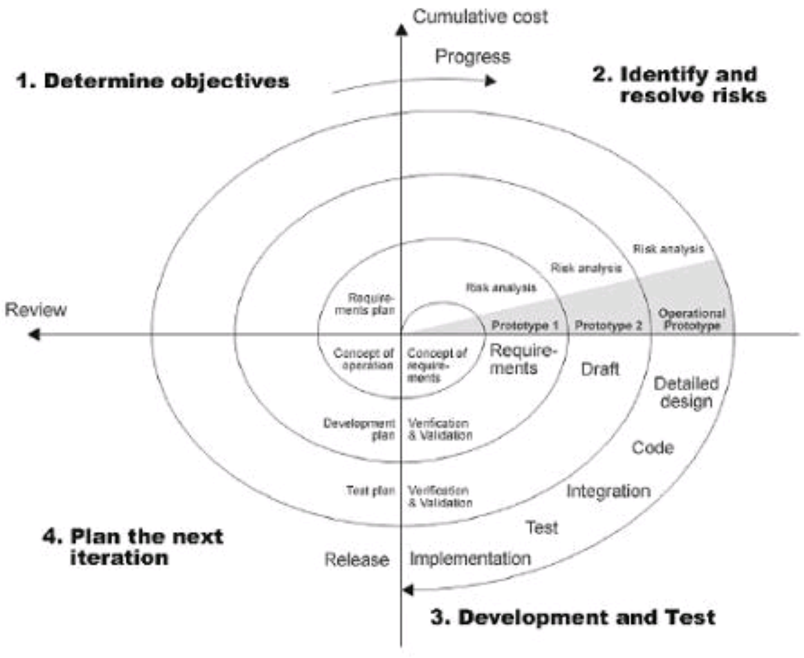

On iteratiivne arendusmudel, mille protssessi kulgemist nimetatakse spiraaliks
Eesmärkide seadmine
Riskide hindamine ja maandamine
Arendus ja valideerimine
Planeerimine
Mis on hea?
Mis on halb?
Kui projekt on väikese riskiga või väikese suurusega, võib mudel olla kulukas.
Riskihindamine pärast iga spiraali läbimist on kulukas.
Mudelil on keeruline struktuur, mistõttu võib selle rakendamine olla arendajatele, juhtidele ja klientidele keeruline
